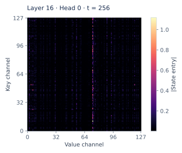
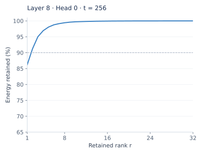
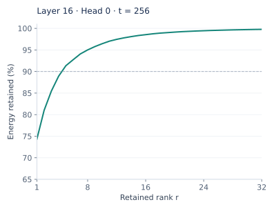
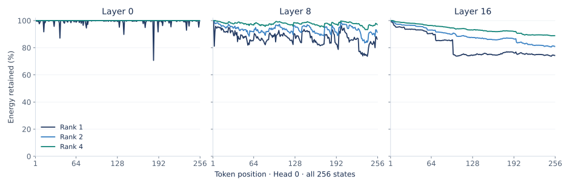
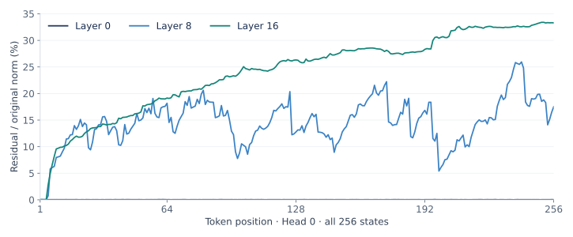
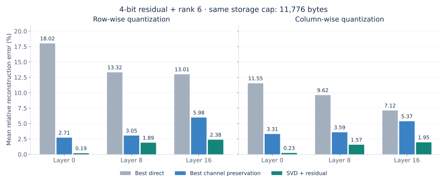
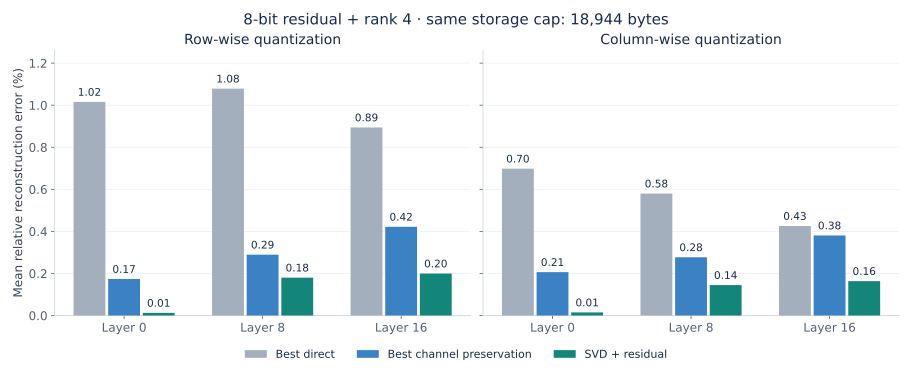
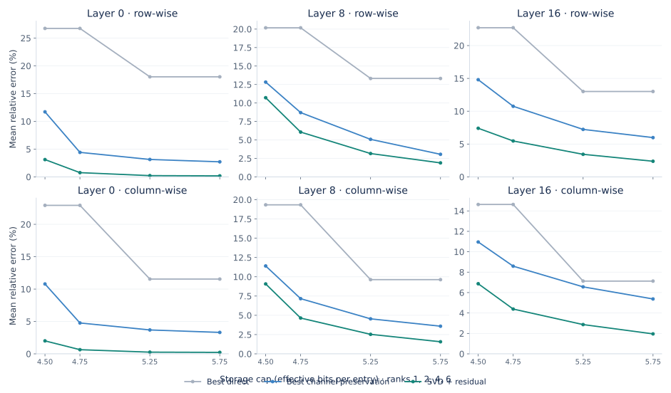

The experiment
Can a few directions make quantization better?
We follow the recurrent state of a pretrained Gated DeltaNet, then test whether preserving a few singular directions improves reconstruction within a fixed storage budget.
Motivated by LeapQuant, this is a small observational study: one document, three layers, and two heads. No training or reproduction of the LeapQuant method.
An FP16 low-rank correction lowers average reconstruction error in every tested layer, even after accounting for its storage. The gain survives comparison with channel preservation.



Actual states at t = 256 · Head 0 · Each heatmap uses its own color range. Click any chart to open it at full size.
Experimental setup
| Model | Qwen3.5-0.8B, pretrained |
|---|---|
| State collection | NVIDIA Tesla T4 |
| Precision | FP16 weights · FP32 recurrent states |
| Input | One document · 256 tokens |
| Layers / heads | Layers 0, 8, 16 · Heads 0, 1 |
| Recorded state | 128 × 128 values after every token |
| Total snapshots | 256 × 3 × 2 = 1,536 matrices |
A matrix, not a list of tokens
Rows are key channels; columns are value channels. Each head maintains its own matrix. Tokens update this matrix rather than becoming new rows in it.
Layer and head IDs start at 0. St is the state immediately after processing token t.
Experiments 2 and 3 reuse the recorded FP32 trajectory. Temporal plots cover every token; quantization summaries average all 256 tokens and both heads within each layer.
Experiment 1 · State structure
Where do the large values live?
Channel RMS locates the large values. Singular energy reveals how many directions capture them.
A dominant key direction
A bright row near key channel 45 aligns with a peak in row RMS. The leading singular component alone retains 99.73% of the energy; rank 1 already exceeds 90%.


A localized value direction
The prominent column near value channel 89 coincides with a large column-RMS peak. The first component retains 86.18% of energy, and the first four retain 96.93%. The 90% energy rank is 2.


More directions, still a compact spectrum
Value channel 73 stands out, while the rest of the matrix contains a broader range of patterns. The leading component retains 74.32%; the first four retain 88.91%, and rank 5 reaches 90%.


Compare final-state metrics
| Layer | Prominent direction | Top-1 energy | Top-4 energy | 90% energy rank |
|---|---|---|---|---|
| 0 | Key channel 45 | 99.73% | 100.00% | 1 |
| 8 | Value channel 89 | 86.18% | 96.93% | 2 |
| 16 | Value channel 73 | 74.32% | 88.91% | 5 |
How to read these measurements
RMS for row i is √(meanj Sij²); column RMS averages over rows instead. The heatmap displays |Sij|. An uncentered SVD gives S = UΣVᵀ, with cumulative energy
This is energy in the original matrix, not a variance ratio from centered covariance. A small energy rank means a good low-rank approximation; it does not establish exact algebraic rank or the cause of outliers.
Experiment 2 · Interactive state trajectory
Watch the recurrent state change, token by token.
Drag the time slider for an immediate update. Press Play to follow all 256 observed states forward.
Loading selected state data…
Read the surface. X = value channel, Y = key channel. Z and color ranges stay fixed over time. Use the global scale to compare layers and heads.
Real frames, forward only. Each pair loads on demand (~16 MiB). The slider updates while dragging; Play stops at token 256. Play at the end restarts from token 1. The faster grid changes display only.
Experiment 2 · Small-rank structure
How much can one, two, or four directions explain?
We compute an exact SVD at every token and track E₁, E₂, and E₄. Head 0 is shown below; no intermediate states are interpolated.

A small rank means different things across layers.
At token 256, rank 1 captures 99.73% of Layer 0’s energy. Rank 4 captures 96.93% in Layer 8 and 88.91% in Layer 16. A broader spectrum leaves more structure for the residual quantizer.
What remains after an FP16 rank-4 correction?

Energy is squared norm: retaining 96.93% of energy still leaves about 17.51% relative residual norm. Experiment 3 quantizes this residual; it does not discard it.
Experiment 3 · SVD-assisted quantization
Is the low-rank correction worth its bytes?
Keep a small SVD correction in FP16, quantize the remaining matrix, and add them back together.
Q uses symmetric per-row or per-column quantization: divide by a channel’s max-absolute scale, round to the nearest signed integer, then rescale. Zero is represented exactly.
Quantize S with one scale per channel.
Store rank-r factors in FP16; quantize S − Lᵣ.
Keep high-energy rows or columns in FP16; quantize the remainder.
A shared storage cap, including the correction.
We count theoretical packed codes, FP32 channel scales, FP16 factors, and channel indices. Each SVD setting is compared with the best tested direct and channel-preservation candidates that fit its budget, using the same row or column grouping.
Lower is better · Arithmetic mean of 512 states per layer: 256 tokens × 2 heads.

With column-wise quantization, the mean error in Layer 8 falls from 9.62% for direct quantization and 3.59% for channel preservation to 1.57% with SVD. Both grouping choices improve on average in all three layers.
Preserving a low-rank direction can be more efficient than preserving a few large channels.
Exact averages and the 8-bit comparison
| Residual / rank | Layer | Direct, within cap | Channels, within cap | SVD |
|---|---|---|---|---|
| 4-bit / 6 | 0 | 11.5461 | 3.3079 | 0.2264 |
| 4-bit / 6 | 8 | 9.6244 | 3.5859 | 1.5671 |
| 4-bit / 6 | 16 | 7.1246 | 5.3741 | 1.9539 |
| 8-bit / 4 | 0 | 0.6982 | 0.2063 | 0.0147 |
| 8-bit / 4 | 8 | 0.5798 | 0.2769 | 0.1446 |
| 8-bit / 4 | 16 | 0.4256 | 0.3806 | 0.1635 |

Rank, storage, and the comparison rules
We test ranks 1, 2, 4, and 6. The highlighted settings follow LeapQuant’s reference ranks: 6 for 4-bit and 4 for 8-bit. Here, each state receives an exact offline SVD; this is not a reproduction of its full quantization pipeline.

For a 128 × 128 matrix, rank r stores two 128 × r FP16 factors: 512r extra bytes. Rank-4 + 4-bit and direct 5-bit both use 10,752 bytes. In this exact-byte comparison, Layer 8’s column-wise mean error is 2.53% versus 9.62%.
Direct candidates use 4–10 bits. Channel controls preserve the highest-energy rows or columns, store their indices, and retain a dense residual payload. They are tested controls, not an optimized channel codec.
Across the two highlighted settings and both groupings, SVD beats the tested direct candidates in all 6,144 state-setting comparisons and the tested channel controls in 6,107. The 37 exceptions occur in Layer 8, Head 0. These are correlated measurements from one document, not independent trials.
What the result establishes
Low-rank structure has practical value for reconstruction.
The experiment goes beyond locating outliers: retaining singular directions improves static quantization even when the correction’s bytes count against the budget. High spectral energy alone does not establish that benefit; the reconstruction comparison does.
This is a reconstruction result for recorded states.
It does not yet establish better model outputs, stable long-context recurrence, decoding speed, or measured memory savings.
What is still missing?
One document and six layer/head pairs provide limited coverage. Every state gets a fresh exact SVD, and each quantized state is evaluated independently. No quantization error feeds into the next update.
The next experiments
First, feed reconstructed states back into the recurrent cache and measure output error and perplexity. Then test longer, independent documents and more heads. Finally, reuse or update the low-rank basis less often, and compare actual runtime and packed memory against stronger channel-preservation methods.
Can this reconstruction advantage survive recurrent feedback and a realistic compute budget?